長期トレンド
JKMとJEPXシステムプライスの推移グラフ
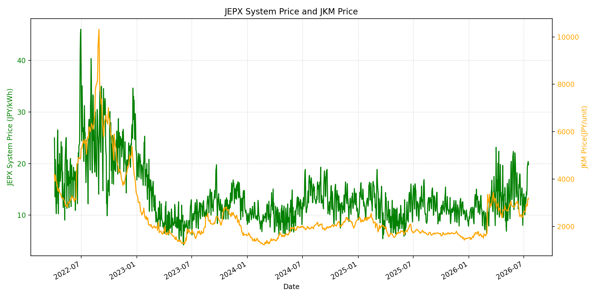
WTIの推移グラフ
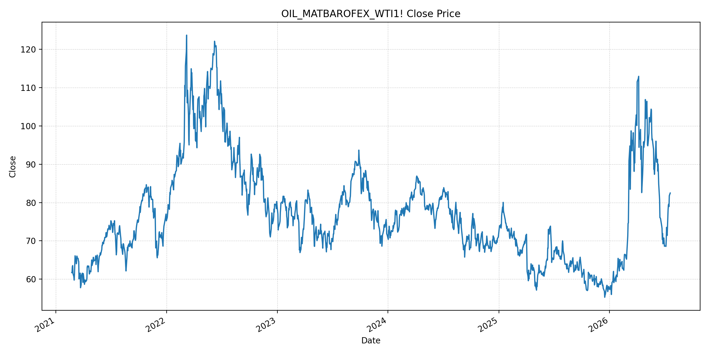
JEPXエリアプライスグラフ（直近一年分）
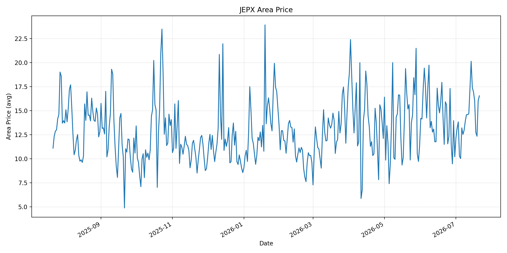
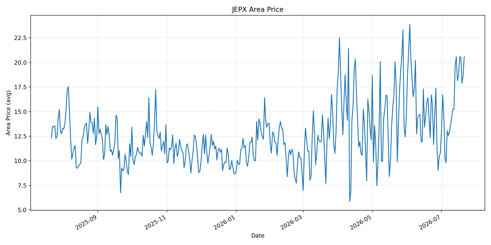
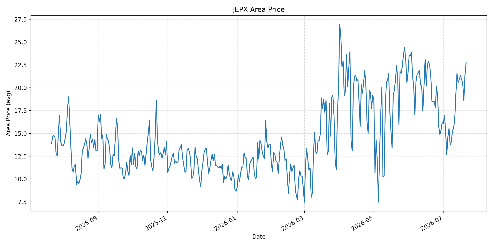
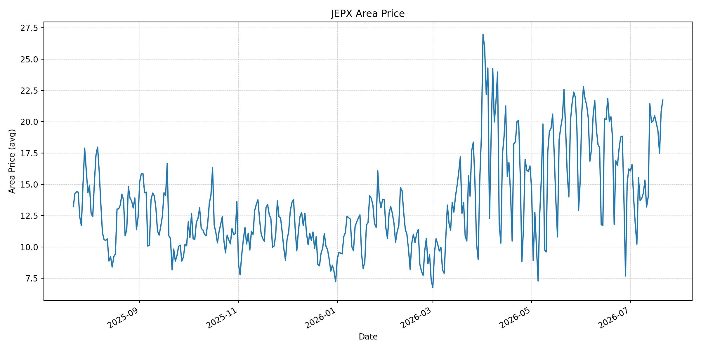
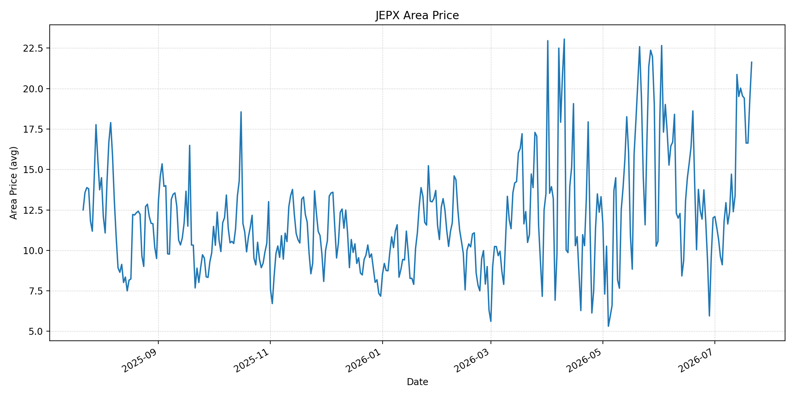
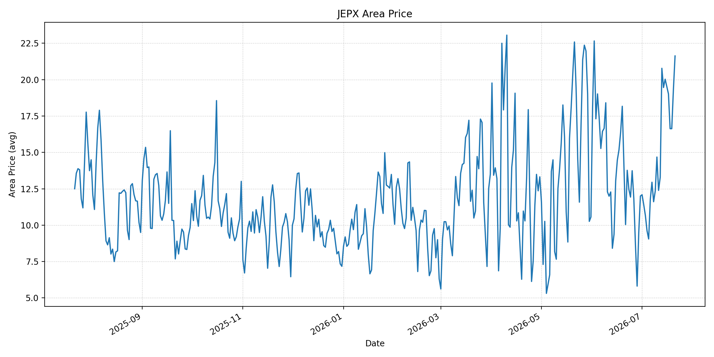
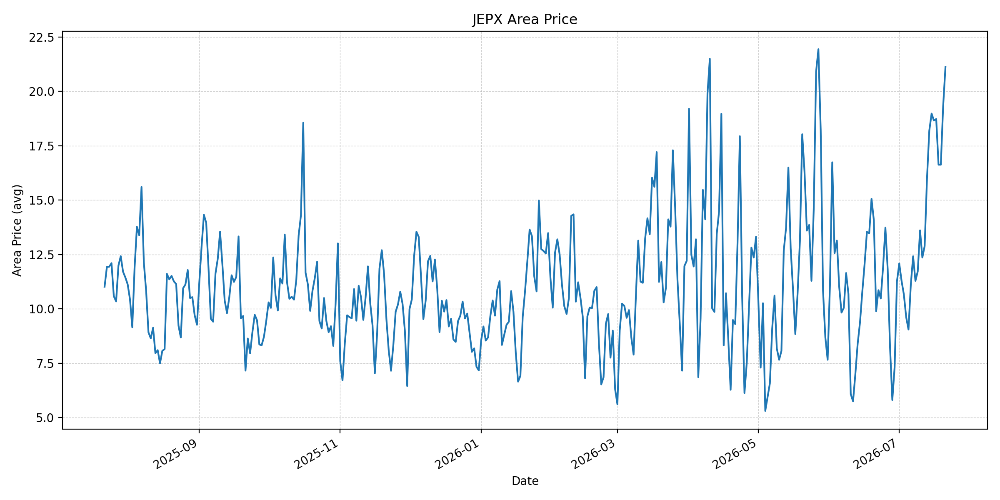
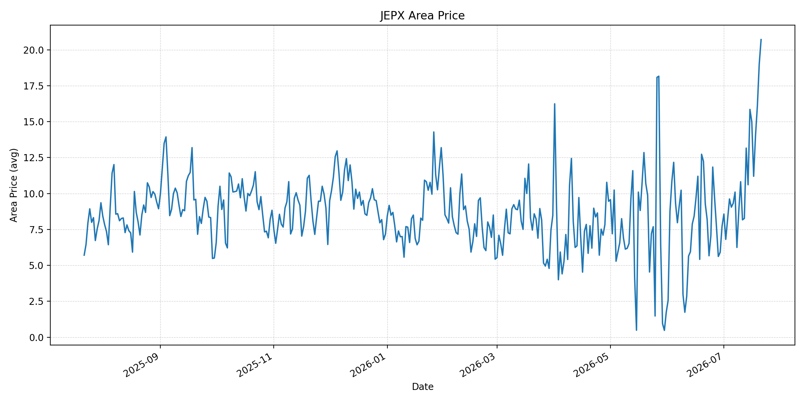
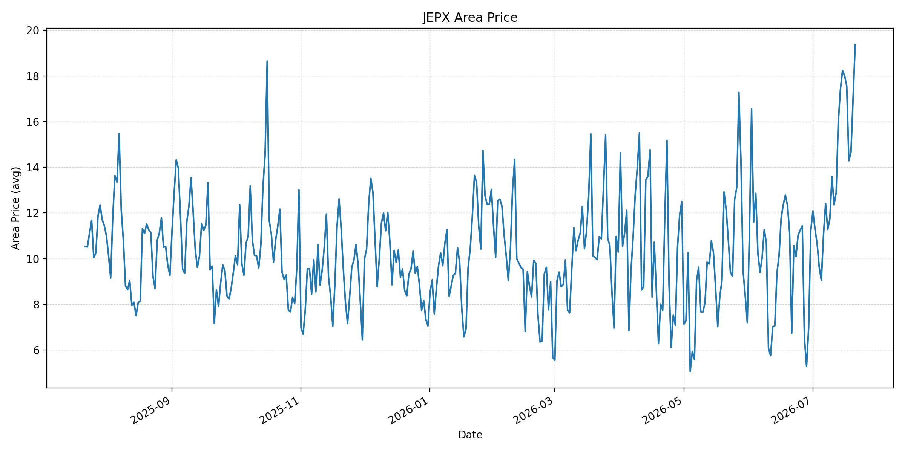
短期トレンド
JKMとJEPXシステムプライスの推移グラフ
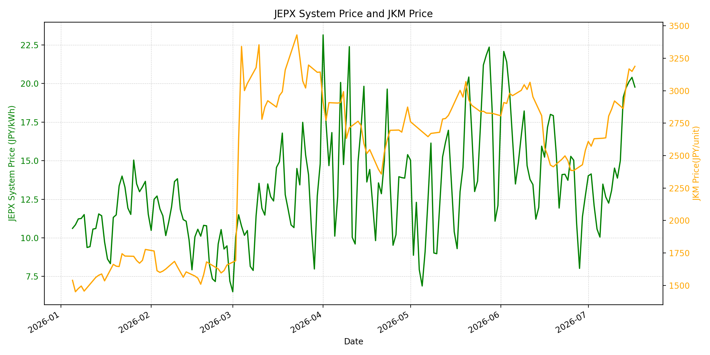
WTIの推移グラフ
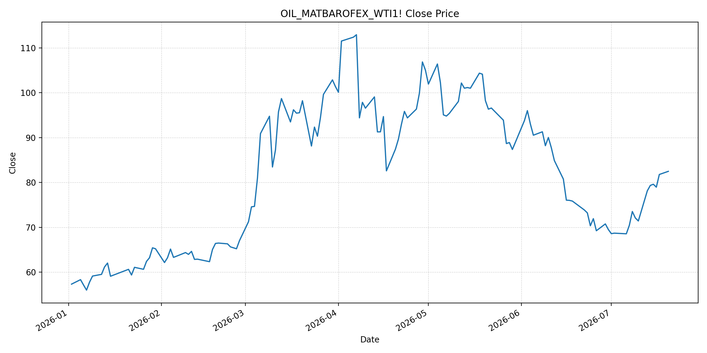
JEPXシステムプライス
JEPXは受渡日ベースの最新非空値で評価しています。最新値は 2026-07-21 分です。先週終値は 2026-07-14 時点の直近値、先月終値は 2026-06-30 時点の直近値で評価しています。
| エリア | 当日価格 | 前日価格 | 前日比（％） | 先週終値 | 先週比（％） | 先月終値 | 先月比（％） | 過去最高値 | 最高値比（％） |
|---|---|---|---|---|---|---|---|---|---|
| システム | 21.57 | 20.07 | 7.47 | 19.74 | 9.27 | 12.73 | 69.44 | 64.06 | -66.33 |
| 北海道 | 16.54 | 16.02 | 3.25 | 20.13 | -17.83 | 10.21 | 62.00 | 73.92 | -77.62 |
| 東北 | 20.58 | 18.64 | 10.41 | 20.58 | 0.00 | 10.78 | 90.91 | 84.92 | -75.76 |
| 東京 | 22.77 | 21.37 | 6.55 | 20.58 | 10.64 | 16.23 | 40.30 | 86.13 | -73.56 |
| 中部 | 21.73 | 20.80 | 4.47 | 19.95 | 8.92 | 16.23 | 33.89 | 52.06 | -58.26 |
| 北陸 | 21.63 | 19.32 | 11.96 | 19.51 | 10.87 | 12.01 | 80.10 | 46.48 | -53.47 |
| 関西 | 21.63 | 19.32 | 11.96 | 19.46 | 11.15 | 12.00 | 80.25 | 46.48 | -53.47 |
| 中国 | 21.12 | 19.32 | 9.32 | 18.19 | 16.11 | 11.26 | 87.57 | 46.48 | -54.57 |
| 四国 | 20.71 | 19.00 | 9.00 | 10.61 | 95.19 | 7.72 | 168.26 | 46.48 | -55.45 |
| 九州 | 19.38 | 17.02 | 13.87 | 17.40 | 11.38 | 11.24 | 72.42 | 40.54 | -52.20 |
LNG先物価格
最新値は 2026-07-17 の LNG(close) です。前日価格は直近非空値の 2026-07-16、先週終値は 2026-07-10 時点の直近値、先月終値は 2026-06-30 時点の直近値で評価しています。
| 当日価格 | 前日価格 | 前日比（％） | 先週終値 | 先週比（％） | 先月終値 | 先月比（％） | 過去最高値 | 最高値比（％） |
|---|---|---|---|---|---|---|---|---|
| 3188.00 | 3149.00 | 1.24 | 2921.00 | 9.14 | 2541.00 | 25.46 | 10319.00 | -69.11 |
石油先物価格
最新値は 2026-07-20 の OIL(close) です。前日価格は直近非空値の 2026-07-17、先週終値は 2026-07-13 時点の直近値、先月終値は 2026-06-30 時点の直近値で評価しています。
| 当日価格 | 前日価格 | 前日比（％） | 先週終値 | 先週比（％） | 先月終値 | 先月比（％） | 過去最高値 | 最高値比（％） |
|---|---|---|---|---|---|---|---|---|
| 82.48 | 81.78 | 0.86 | 78.14 | 5.55 | 69.50 | 18.68 | 123.70 | -33.32 |
ニュース
イラン情勢に関するニュース
- 2026年7月20日、APは、米軍がホルムズ海峡再開を狙って10夜連続の対イラン攻撃を実施したと報じました。イランはクウェート、ヨルダン、バーレーンなど米国同盟国を攻撃し、パキスタン経由の外交努力は続くものの、停戦の実効性は弱い状態です。 参照: AP, 2026-07-20
- Guardianは、イラン大統領が「全面戦争」状態を認め、米軍が司令部、防空、沿岸監視、ミサイル・ドローン発射拠点、通信網を攻撃したと報じました。タンカー被弾、クウェートの防空対応、フーシ派によるサウジ港湾封鎖宣言も同時に伝えられています。 参照: Guardian, 2026-07-20
ホルムズ海峡経由の石油・LNGに関するニュース
- WSJは、米イランの攻撃激化を受けてBrentが一時90ドルを超え、その後88ドル近辺へ戻したと報じました。WTIも81ドル前後で推移し、ホルムズ海峡の実質的な閉鎖と米国の封鎖再開が、原油と精製品市場のタイト化を強めています。 参照: WSJ, 2026-07-20
- Guardianは、欧州ガス価格が4カ月ぶり高値に上昇し、オランダTTFが一時60ユーロ/MWhを超えたと報じました。カタールLNGの輸出回復が遅れ、湾岸から東向きに出たLNGカーゴは通常月90〜100隻に対し、紛争開始後は26隻にとどまるとされています。 参照: Guardian, 2026-07-20
- APは、ASEAN外相がマニラ会合でホルムズ海峡の安全で妨げられない継続的な通航回復を求める見通しだと報じました。東南アジアは中東の石油・ガス依存が大きく、地域のエネルギー・食料安全保障に波及しています。 参照: AP, 2026-07-21
ホルムズ海峡経由でない石油・LNGに関するニュース
- APは、ホルムズ海峡が塞がれる中でサウジアラビアが紅海向けパイプラインに依存しているが、イラン支援のフーシ派が紅海とアデン湾の間の航行阻止を表明したと報じました。非ホルムズ経由の代替ルートにも軍事リスクが波及しています。 参照: AP, 2026-07-20
- 過去24時間で、非ホルムズの新規増産、代替パイプライン、または非ホルムズLNG供給を直接改善する強い新規記事は確認できませんでした。新しい材料は、紅海ルートへの封鎖リスクとカタールLNGの回復遅延に偏っています。 参照: Guardian, 2026-07-20
日本国内のイラン戦争に関係するニュース
- 過去24時間で、JEPX制度、国内電力需給ルール、または日本政府のイラン戦争関連対策を直接変更する主要な新規公表は確認できませんでした。
- 関連する国内材料として、経済産業省は2026年6月16日の会見で、ホルムズ情勢にかかわらず7月の原油調達を前年並みに戻す見通しと、8月以降に前年の75％水準を想定しても備蓄活用で2028年3月末まで安定供給が可能との見方を示していました。ただし、足元ではホルムズと紅海双方の輸送リスクが再拡大しています。 参照: 経済産業省, 2026-06-16
インサイト
ニュース事項による日本の電力市場への影響（短期：数日〜1週間）
- JEPXシステムプライスは 21.57 円/kWhで前日比 7.47%、先月比 69.44% と再上昇しました。東京 22.77 円/kWh、北陸・関西 21.63 円/kWhなど、主要エリアが20円台に広がっており、米イラン攻撃激化とタンカー被弾のニュースは短期の上値圧力です。
- OILは 82.48 で前回非空値比 0.86%、先週比 5.55%、LNGは 3188.00 で前回非空値比 1.24%、先週比 9.14% です。Brentの90ドル超えと欧州ガス価格の上昇は、数日〜1週間の燃料費・保険料プレミアムをJEPXへ波及させやすいです。
- 四国は先週比 95.19%、九州は前日比 13.87% と西日本の上昇も目立ちます。週末に一度下げた後、7月21日に広域で戻しており、ホルムズだけでなく紅海ルートの懸念が強まる場合、日次の反落余地は限定的です。
ニュース事項による日本の電力市場への影響（長期：1ヶ月〜半年）
- LNGは先月比 25.46%、OILは 18.68% 上昇しています。カタールLNGの輸出回復遅れと湾岸発カーゴ減少が長引く場合、燃料調達コストは1ヶ月〜半年の電力価格に残りやすく、スポット調達比率の高い局面では価格転嫁リスクが大きくなります。
- JEPXシステム価格は先月比 69.44%、東北は 90.91%、中国は 87.57%、四国は 168.26% 上昇しています。METIは備蓄活用で安定供給を見込んでいましたが、紅海ルートにも封鎖リスクが及ぶと、供給量より輸送・保険・調達先分散コストが電力市場の不確実性として残ります。
- OILは過去最高値比 -33.32%、LNGは -69.11% と歴史的高値からは低位です。ただし、ホルムズの完全再開が遅れ、ASEANが安全で継続的な航行回復を求めるほど地域経済への影響が広がっているため、日本の燃料価格見通しも中期的には上振れ方向に傾きます。